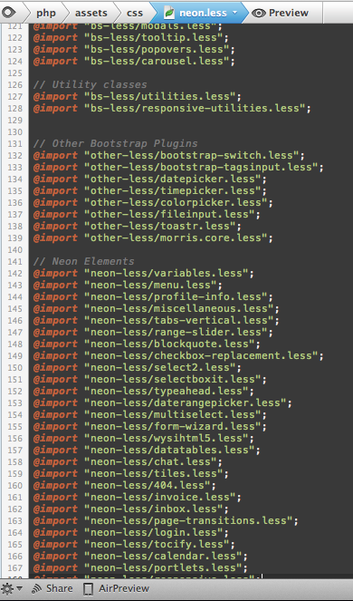
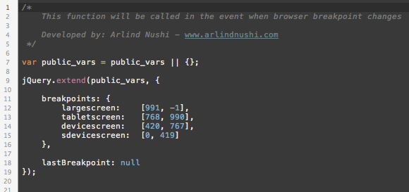

Neon its built on Twitter Bootstrap 3 framework, so the chances are higher for you know how to handle the development of this kind of framework.
We have developed Neon theme using LESS dynamic styling language, and all files are separated to make you more easy to find and customize any part of theme, add or remove parts of CSS that are not needed on your theme.
The only file needed to compile is assets/css/neon.less, it contains all the CSS, and you don't need to add anything else outside this file, except when you use custom resource which has its own CSS style.
The LESS structure of the items organized on this principle:
- assets/css/bs-less/
- assets/css/neon-less/
- assets/css/other-less/
It clearly describes what is included, what should be in, and other stylesheets. They have been grouped on single file neon.less, here is how it looks:

So in case you need to remove any feature on CSS simply comment the line, for example
//@import "neon-less/datatables.less";
And if you want to add custom styling just create less file and include it:
@import "my-less/modals-v2.less";
Then compile the CSS using any related LESS compiler, my preferred one and used to build Neon is: LESS.app, download it here.
Not familiar with LESS? No Problem
LESS styling has been used only to keep control what you want to include on the theme and what not. If you want not to touch the development files, then open assets/css/custom.css and put your own CSS.
This file its called on all HTML pages that come with Neon.
Main scripts instances of the theme are executed on assets/js/neon-custom.js so if you want to learn more how they coded read the code. Its all commented to help you understand what does what.
Browser Intent - Responsive
For responsiveness, we have created neon.resize event that is applied on $(window) and tells you when the window has been resized. This is special event because it fires only when the window has finished the resizing, not every pixel it has been resized. They you can use helper functions to detect the device type and they are:
- is(device_type);
- Example: is('largescreen'); or is('tabletscreen'); or is('devicescreen'); or is('sdevicescreen');
- ismdxl(); // true when screen size is large screen or tablet screen
- isxs(); // true when screen is smaller than tablet
You can change the breakpoints or add custom on this file: assets/js/resizeable.js

{kind=link}
{kind=link}
{kind=link}
{kind=link}
{kind=link}
{kind=link}
{kind=link}
{kind=link}
{kind=link}